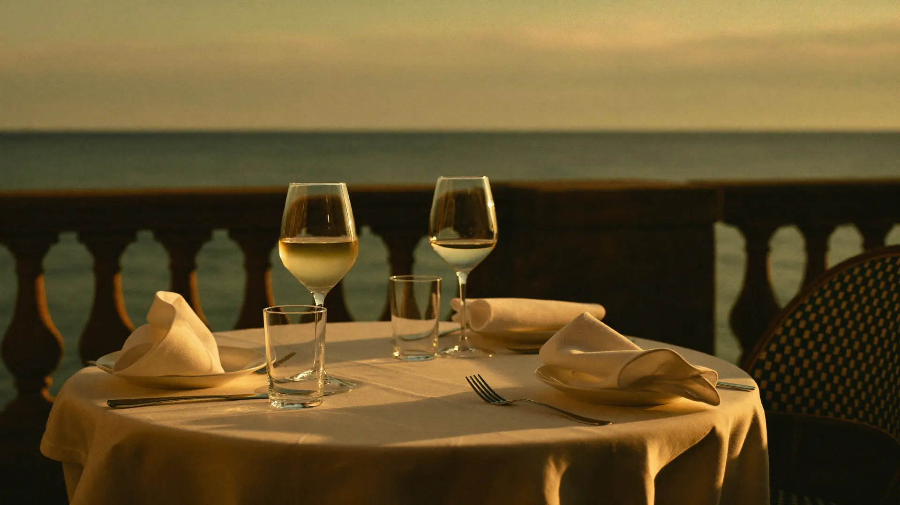
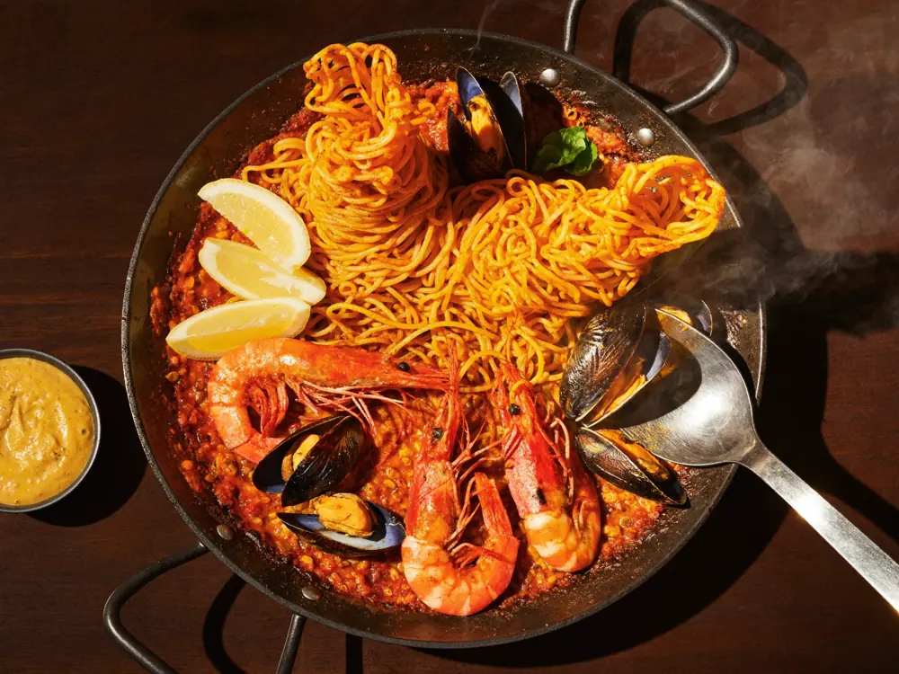
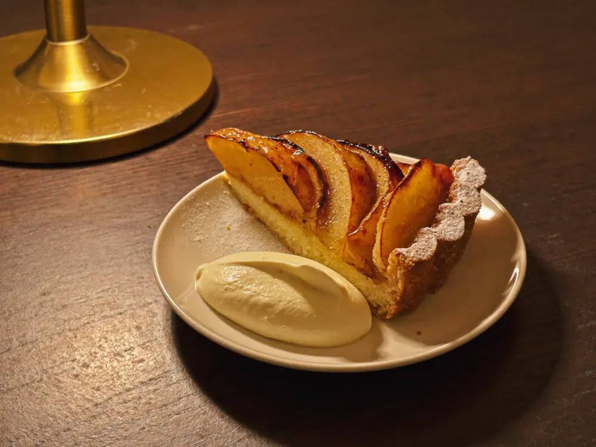
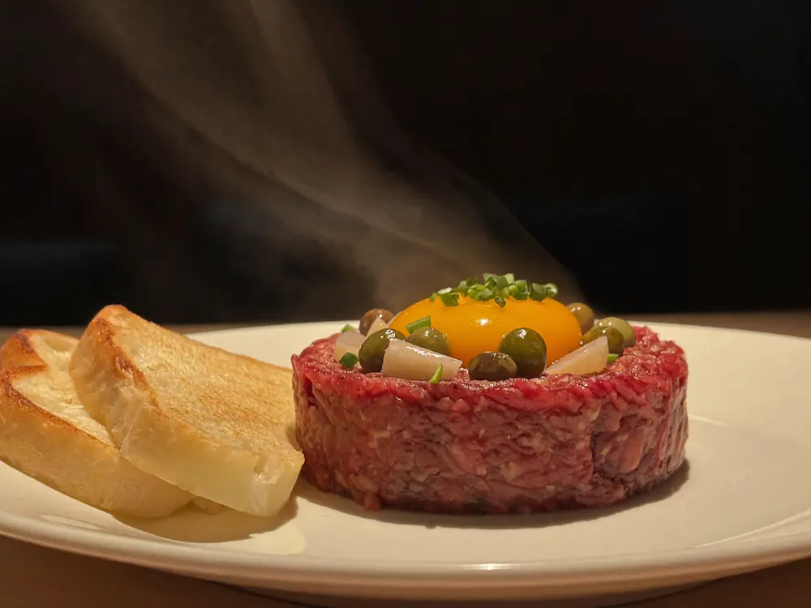

Cocina de mercado en el paseo de L'Escala. Paella, fideuà y tapas, con un giro de bistró: steak tartare y tarta tatin casera.

La casa
Kairos está en el Passeig de la Riba, en primera línea del paseo de L'Escala. Es un bistró: carta corta, producto del día y una sala que funciona igual a mediodía que de noche.
Lo que más repiten quienes escriben sobre la casa es la paella y las tapas — cada una aparece en 36 opiniones distintas. Y después, dos platos que no se esperan en un sitio de playa: el steak tartare y la tarta tatin casera.
Cocina
Los platos que aparecen una y otra vez en las opiniones y en las fotos de la casa.

Marcada como plato popular de la casa en Google. 14 menciones.

Hecha en casa. El postre que cierra la comida.
El plato más citado de la casa, en 36 opiniones distintas.
Empatadas con la paella: otras 36 menciones.

El plato de bistró que nadie espera encontrar en el paseo.
Producto del día, hecho al momento.
De las que más fotografía la gente.
Lo que dicen
Comida excelente de principio a fin. Todos los platos estaban deliciosos y la presentación especialmente cuidada, con platos bonitos. Servicio acogedor y atento.
Vaya buena dirección. Muy buena acogida y muy buen servicio. Buenos platos, y bravo por la paella.
Los números
832 opiniones en Google, y 285 personas confirmando el rango de precio.
Cómo llegar
En el Passeig de la Riba, el paseo marítimo de L'Escala. Sala, terraza, para llevar y a domicilio.
Llamar ahora Abrir en MapsPreguntas frecuentes
La cocina cierra a las 23:00.
Sí. Se puede comer en sala, pedir para llevar o pedir a domicilio.
El rango habitual es de 20 a 30 € por persona. Lo han confirmado 285 personas en Google.
La paella y las tapas son lo más nombrado, empatadas en 36 opiniones cada una. La fideuà y la tarta tatin casera están marcadas como platos populares.
Lo más seguro es llamar al 972 04 05 08, sobre todo en temporada alta.